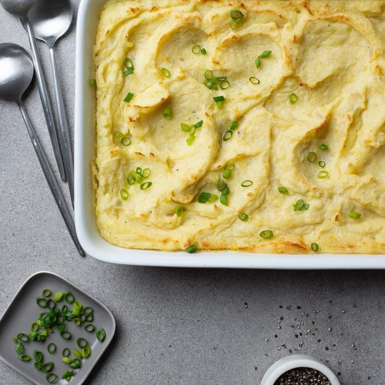

Mashed Potatoes

If you don't eat mashed potatoes on Thanksgiving, you are not real.
This awesome sauce mashed potatoes recipe will fulfill all your potato desires!
Ingredients
- 4 1/2 pounds russet potatoes, peeled and halved
- 1/2 mascarpone cheese at room temperature
- 1 egg yolk
- 3/4 cup milk
- salt and freshly ground black pepper
- some cayenne pepper
- 1 cup butter cut into chunks
Directions
- Put the potato halves into a pot of salted water until it boils, and reduce heat to medium-low. Cook until
thats very tender. A knife should pierce the middle of a potato half with ease. Transfer the potatoes to a
colander and drain thoroughly.
- Preheat the oven to 220 degrees C (425 degrees F).
- Whisk mascarpone chees in a mixing bowl until smooth.
- Stir egg yolk and milk into the cheese, whisking until smooth.
- Season with salt, black pepper, and cayenne pepper.
- Transfer potatoes to a large mixing bowl, add butter chunks to the bowl, and season with salt and black
pepper.
- Mash butter into potatoes until fluffy, a few little lumps are okay. Whisk mascarpone mixture into the
mashed potatoes.
- Spread the mashed potatoes into a 9x13-inch baking dish. Smooth the top and if you want to be extra use the
tip of a spatula to press the potatoes and l ift up to craete litle peaks and valleys.
- Bake in the preheated oven until potatoes are heated through and the top is golden brown.
- You are done enjoy your mashed potatoes.